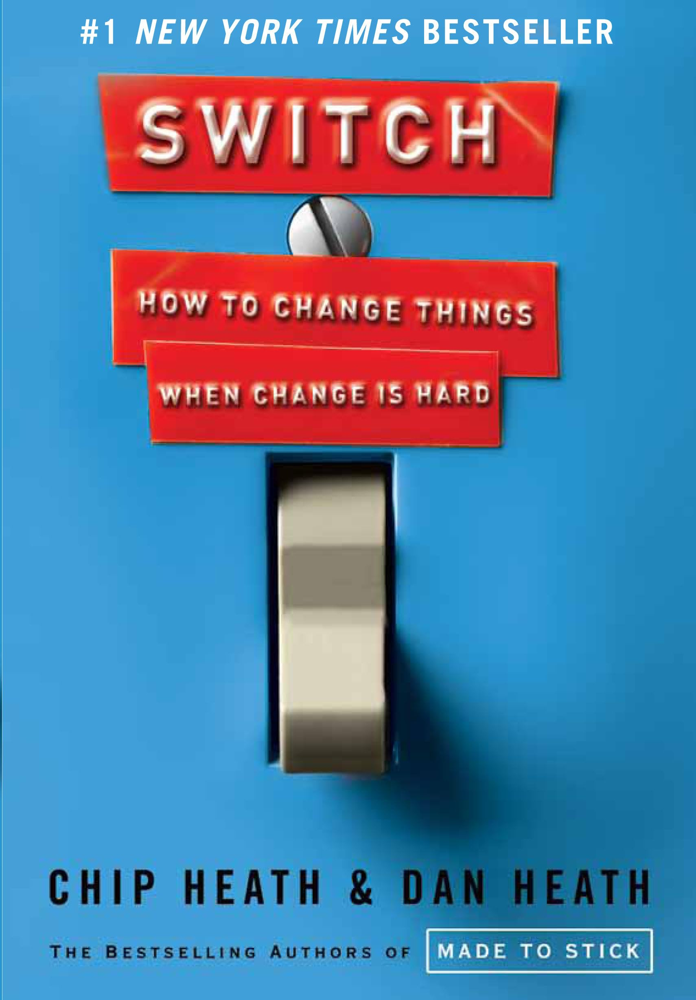

Switch opens with a puzzle: why do so many change efforts — personal, organizational, societal — fail, even when the people involved are smart, well-intentioned, and genuinely want the change to happen? Chip and Dan Heath's answer borrows a metaphor from psychologist Jonathan Haidt: our minds contain a rational Rider holding the reins of an emotional Elephant, both of them moving down a Path that is the surrounding environment. The Rider can plan and analyze, but is small compared to the Elephant and prone to overthinking. The Elephant supplies the energy and emotion that gets anything done, but resists anything that feels effortful, risky, or unfamiliar. And the Path — the situation itself — can make a behavior easy or nearly impossible regardless of what Rider or Elephant want.
Most change efforts fail, the Heaths argue, because they only address one of these three. A brilliant strategic plan speaks only to the Rider and gets no traction because the Elephant never buys in emotionally. A rousing, inspiring speech fires up the Elephant but gives the Rider no concrete next step, so momentum dissipates within days. And even a motivated Rider and an inspired Elephant will struggle if the Path itself — the office layout, the default settings, the surrounding culture — is quietly working against the desired behavior. The book's organizing insight is that durable change requires working on all three simultaneously, and it structures itself around nine specific, repeatable techniques for doing exactly that — three for the Rider, three for the Elephant, three for the Path.
What sets Switch apart from typical change-management books is its refusal to stay abstract. Nearly every technique is illustrated with a real case — a public-health campaign, a struggling manufacturing plant, a malnourished village in Vietnam, a hospital purchasing department — chosen specifically because it shows the framework working in a messy, real-world setting rather than a tidy hypothetical. The result reads less like a theory of change and more like a field manual: pick the lever that's stuck, apply the matching technique, and move forward.
The book's foundational metaphor, borrowed from psychologist Jonathan Haidt. Every change effort is really three simultaneous efforts, and most failures trace back to addressing only one.
The rational, analytical mind. Can plan and reason, but is small relative to the Elephant and prone to overanalyzing until it stalls.
The emotional, instinctive mind. Supplies the energy for any action, but resists anything that feels effortful, risky, or unfamiliar.
The surrounding situation and environment. Can make a behavior nearly automatic, or nearly impossible, regardless of what Rider and Elephant want.
Three concrete techniques for each lever — the working toolkit of the entire book.
Clone what's already working instead of diagnosing what's broken
Replace ambiguous goals with specific, concrete instructions
Give a vivid, specific picture of what success looks like
Make people see and feel the problem, not just analyze it
Break intimidating goals into a first step that feels almost effortless
Cultivate a growth mindset and an identity that welcomes the change
Make the right behavior the easy, default option
Pre-load decisions with if-then triggers so willpower isn't required
Show people that others like them are already changing
Rather than importing outside solutions or exhaustively diagnosing failure, look for the people or teams already achieving the desired outcome against the odds, and study what's genuinely different about what they're doing. Popularized by Jerry Sternin's malnutrition work in Vietnam; generalizes to almost any change effort where success already exists somewhere in the system.
Roy Baumeister's finding that self-control draws from a single, limited daily reserve — resisting temptation or making difficult decisions in one area leaves less willpower available for the next. Explains why change efforts that rely on sustained willpower tend to collapse after the first burst of enthusiasm fades.
Peter Gollwitzer's research-backed technique of pre-committing to a specific action triggered by a specific situation, rather than relying on a general intention. Converts a behavior that would otherwise require willpower in the moment into something closer to an automatic response.
Carol Dweck's distinction between believing traits and abilities are fixed versus malleable through effort. People with a growth mindset treat setbacks as information and take on harder challenges — a mindset that can be deliberately cultivated through how effort and failure are framed and praised.
Robert Cialdini's finding that people take strong behavioral cues from what they believe others around them are already doing — often more powerful than direct appeals to logic or self-interest, especially under uncertainty. Best activated with specific, local, credible evidence rather than generic claims.
What looks like a people problem is often a situation problem.
What looks like laziness is often exhaustion.
What looks like resistance is often a lack of clarity.
To make progress, direct the Rider, motivate the Elephant, and shape the Path.
If the book has one idea worth carrying into a new role above all others, it's the three-way diagnostic itself: when a change effort stalls, the instinct is almost always to push harder on whatever you already tried — more persuasion, more inspiration, more pressure. Switch's deepest contribution is training you to stop and ask which of the three levers is actually stuck. A team that "won't get on board" may not need a better argument (Rider) or more enthusiasm (Elephant) at all — it may simply be stuck in an environment (Path) that quietly rewards the old behavior and punishes the new one.
This reframing matters enormously for anyone new to a role and eager to make an early mark. The natural instinct in a new job is to lead with vision and persuasion — a compelling case for why change is needed. Switch's evidence suggests that's necessary but rarely sufficient: without a scripted first move, a felt (not just understood) reason to care, and an environment that makes the new behavior the path of least resistance, even the most persuasive case for change will stall within weeks.
The practical discipline this creates is a habit of diagnosis before action: before assuming people are resistant, lazy, or set in their ways, check whether the ask is actually clear, whether anyone has genuinely felt the stakes, and whether the surrounding environment is quietly working against the very behavior being requested.
Switch earns its status as a modern change-management classic by doing something surprisingly rare: turning a genuinely simple metaphor into a genuinely comprehensive, evidence-backed toolkit, without either oversimplifying the psychology or burying the reader in academic caveats. The Rider, Elephant, and Path aren't just a memorable device — they map cleanly onto real, well-studied psychological mechanisms, and each of the book's nine techniques gives a specific lever to pull rather than a vague principle to admire.
The book's greatest practical value is as a diagnostic instrument, not just an inspirational read. Most change-management writing tells you why change matters or how change generally works; Switch instead gives you a specific set of questions to ask about a specific stalled change in front of you right now — is this a Rider problem, an Elephant problem, or a Path problem — and a matching technique for whichever answer comes back.
For a new leader trying to move a team or process in a new direction, the highest-leverage habit to take from this book is resisting the urge to simply repeat and intensify whatever approach isn't working. If persuasion isn't landing, the fix is rarely a better argument — it's more likely a missing script, an unfelt stake, or an environment quietly pulling in the opposite direction. Reading the book once for the full model, then returning to the nine-technique grid whenever a specific change effort stalls, is exactly how it's meant to be used.
The honest recommendation: read it early in any new role where you expect to drive change, before you've committed to a change strategy that only speaks to one of the three levers. It's short enough to read in a weekend and durable enough to keep referencing for years — most of its value comes not from the first read but from the habit of running the diagnostic every time a change effort you're leading starts to stall.